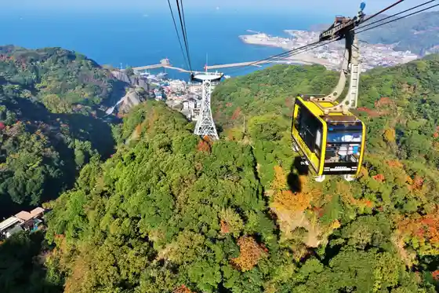

Maza Ranch
Futtsu, Chiba · 0439-37-3211 · Official / source link
Nokogiriyama Ropue
Futtsu, Chiba · 0439-69-2314 · Official / source link

Kanaya Minato
Futtsu, Chiba · 0439-69-2111 · Official / source link
Meiji Hyakunen Kinen Temboto
Futtsu, Chiba · 0439-87-8887 · Official / source link
Futtsu Park
Futtsu, Chiba · 0439-87-8887 · Official / source link
Za Fisshu
Futtsu, Chiba · 0439-69-2161 · Official / source link
Tokyowan Kannon
Futtsu, Chiba · 0439-65-1222 · Official / source link
BAYSIDE KANAYA (Beisaido Kanaya)
Futtsu, Chiba · 0439-27-1415 · Official / source link
Toro Bandai Shi no Kiridoshi Tonneru
Futtsu, Chiba · 0439-80-1291 · Official / source link
Nokogiriyama Art Museum
Futtsu, Chiba · 0439-69-8111 · Official / source link
Tokyowan Ferii
Futtsu, Chiba · 0439-69-2111 · Official / source link
Dai 25 Kai Aki no Kodomo Shasei Taikai / Maza Ranch
Futtsu, Chiba · Official / source link
Iwatani Kannon Do Yagura Gun
Futtsu, Chiba · 0439-80-1291 · Official / source link
Koizumi Shuzo Goshigaisha Somuriehausu Sake Takumi no Kan
Futtsu, Chiba · 0439-68-0100 · Official / source link
Ichigo Kari / Maza Ranch
Futtsu, Chiba · Official / source link
Futtsu Beach
Futtsu, Chiba · 0439-80-1291 · Official / source link
Sambirejji Kanaya Campground
Futtsu, Chiba · 090-2932-2843 · Official / source link
Futtsu Moto Su Horui Hodai (Naka no Shima)
Futtsu, Chiba · 0439-87-8887 · Official / source link
Onuki Chuo Beach
Futtsu, Chiba · 0439-80-1291 · Official / source link
Shinmaiko Beach
Futtsu, Chiba · 0439-80-1291 · Official / source link
HOTEL&GLAMPING ACT FUTTSU
Futtsu, Chiba · 0439-29-5607 · Official / source link
Omori Bara Engei
Futtsu, Chiba · 080-4000-9083 · Official / source link